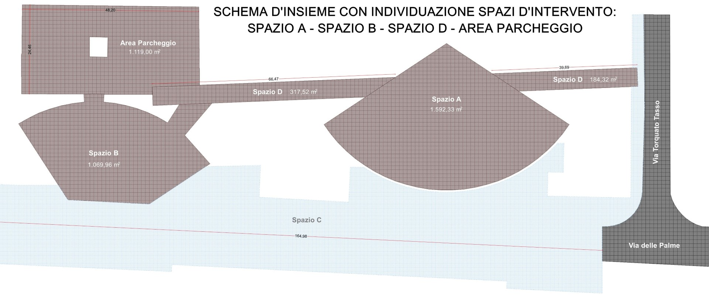
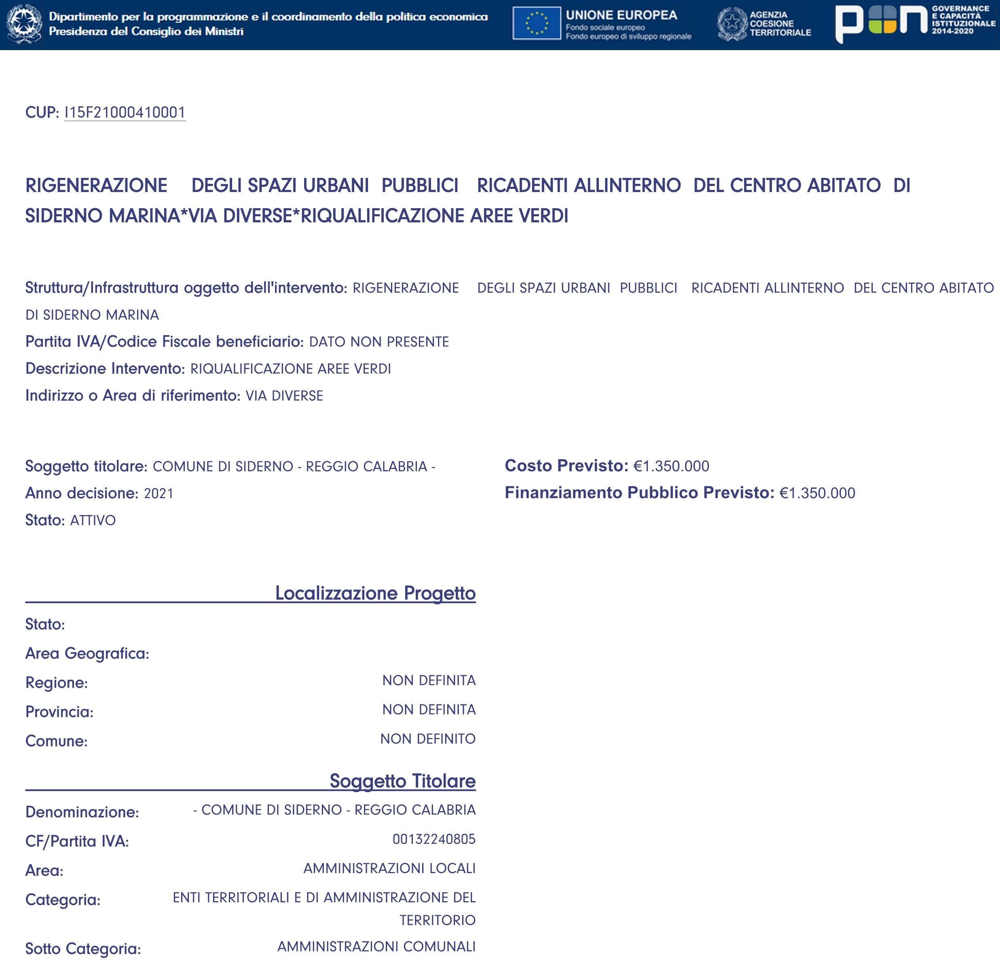

YMCA
Premessa
In questa pagine si riassume molto velocemente gli argomento affrontati durante l’evento tenutosi all’YMCA, purtroppo quel giorno non è stato possibile proeittare efficaciamenti tutte le schede in modo da esporre il raggionamento dietro il quale il comitato “un sasso nello stagno” si è contraposto al progetto d’iniziativa pubblica.
La premessa indissolubile
il finaziamento erogato dal PNRR prevede l’osservanza del principio DNSH, ovvero l’interdizione di dannegiare o indebolire ridurre le aree di verde pubbliche esistenti. La dichiarazione è ribadita a p. 43 deella relazione tecnica allegata al progetto:

nella pagine seguente (.44) sono invece richiamate le normative che devono essere rispettate dal progetto porposto:

Sobno state poi citati due articoli della legge 10: art 6 art 7
sono poi state rapidamente suurvolate le linee guida per la gestione del verde urbano


Dopodichè si è visualizzato l’impronta delle superficie pavimentate sovra impresso su una foto satellitare del sito in questione.

Vengono poi spiegate le aree di destinazione prevista dal progetto:

quantificate l’estensione delle dette aree

ed infine esposto il bilancio di aree vegetali e di quelle pavimentate previste dalle tavole allegate al progetto. Come si puo leggere la superficie vegetale è in netta diminuzione. Solo questo dato contrasta inequivocabilmente il principio DNSH accenato all’inizio.

Alla rappresentazione delle alberatura proposta in sede progettuale poco fedele alla realtà del luogo:

Si è riproposta una planimetria piu congura sopratutto riguardo la volumetria occupata dalle chiome esistenti.

Si è poi colto l’occasione per spiegare come funziona

Ed in contrasto ancora una volta con tutto quanto appena spiegato, si evidenzia come, a p.18 delle relazione tecnica, fosse prevista in una fase sicuramente embrionaria precedente del progetto addirittura l’installazione di un manufatto coperto proprio sotto le chiome dei alberi monumentali. Sicuramente in quel attimo l’integrità ambientale del sito non faceva parte delle priorità del progettista:

La fotografia seguente illustra bene la difficoltà obiettiva cantieristica a collocare anche un gazebo fruibile da persone adulte statisticamente normali riguardo le altezze medie di ognuno.

Nelle slide successive erano poi illustrate l’inutilità di prevedere un vespaio areato che ricoprisse la zona delle radici affiorante degli alberi monumentali, in fatti l’installazione a regola d’arte prevede quel tipo di preparazione:

L’inserimento di questi pali all’interno dell’apparato radicale rappresenta un rischio ben maggiore di dannegiarlo che la garanzia di protezione prevista.

Alla stessa stragua andrebbe ripensato l’impianto elettrico nei pressi delle radici degli alberi monumentali, che potrebbero danneggiarli nella posa degli stessi senza contare l’effetto a lungo termine dei campi elettromagnetici sugli scambi molecolari in atto nel terreno. Spesso la progettazione seria di giardini prevede l’utilizzo di pali luminosi equipaggiati di panelli solare per evitare l’installazione di cavi imgombranti nel sottosuolo.

Si è trattato anche dell’impianto d’irrigazione, evidenziando che il dimensionamento del recupero delle acque piovane è insuffciente perchè calibrato esclusivamente sulle precipitazione estive invece di quelle piu abondante dei mesi più piovosi:

Oltre questo il nuovo sistema d’irrigazione è previsto solamente per le palme washingtonia coloro che notoriamente necessitano di meno di apporto di aqua. Sono le specie preferite dalle amministrazioni che non intendono addosarsi spese di manutensione/irrigazione contingenti.

La mappatura delle inquadrature delle fotografie prese durante il rilievo mostra come la fascia compresa tra la ferrovia e il vialletto non è stato neanche repertoriato. Come puo l’intervento circostante prendersi cura della zona antica se non è stata neanche esaminata con la stessa cura ?

Giungiamo al pezzo di maggiore criticità, le tribune, la sezione del manufatto non lascia margine d’interpretazione possibile, assomiglia definitivamente alle sezioni dei muri a gravita di gabbionate adoperate per il contenimento delle scarpate lungo le strade di percorenza. Solo che a ridosson non è presente nessun terreno da contenere. Di solito si deve scelgiere tra l’economicità dei gabbioni controbilanciata dal loro ingombro notevole opure il sovraprezzo del cemento armato che offre un ingombro molto ridotto. Qui è stato realizzato l’ibridazione piu sfavorevole unendo il costo del cemento armato all’ingombro delle gabbionate.

Sottovalutando che la altezze raggiunte dei gradini possono determinare ricschi di caduta per gli utenti non indifferenti


Ecco per esempio una tribuna utlizzata per all’interno di una scuola, si nota come è stata prevista una recinzione di protezione anche nelle scalinate piu basse
Non serve andare molto lontano per vedere esempi di efficacia sobrietà su siti storicamente molto piu pubblicizzati come l’antico teatro di Trapani.

Finalmente si è toccato l’argomento delicato delle spese previste, è stato preparato un diagramma dove sono illustrate le ripartizione delle spese previste. Le spese delle opere riguardante il verde urbano e la sua attrezzatura non supera il 10 %, tutto il resot è assorbito dell’artificializzazione del sito.
Impostazione che sorprende dato la classificazione prevista dalla scheda identificativa dell’ergazine del finanziamento:


E’ stato chiesto alla fine se potrebbero essere accettate proposte di variante, il comitato ha riportato che l’amministrazione ha da subito affermato che non potevano essere accolte in nessun caso proposte di varriante considerate le difficoltà passate ad ottenere i vari consensi ed autorizzazione durante le conferenze dei servizi. Considerato che sia la normativa delle opere pubbliche che il contratto di appalto prevedono la gestione delle varianti, abbiamo inteso che l’affermazione della P.A. Comunale aveva come intento di limitare l’importanza e l’entità delle enventuali variante.